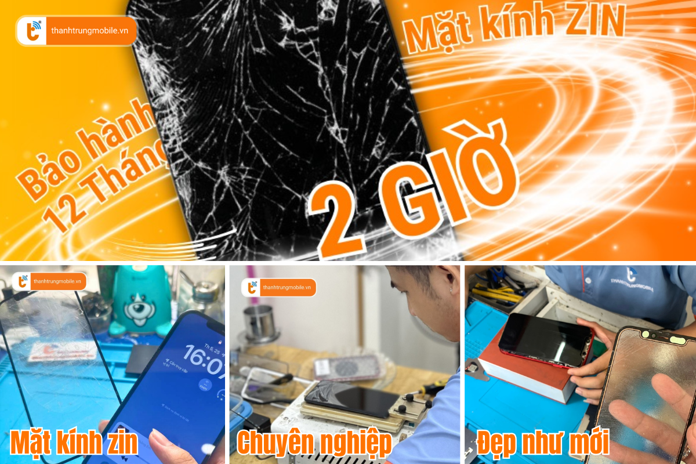
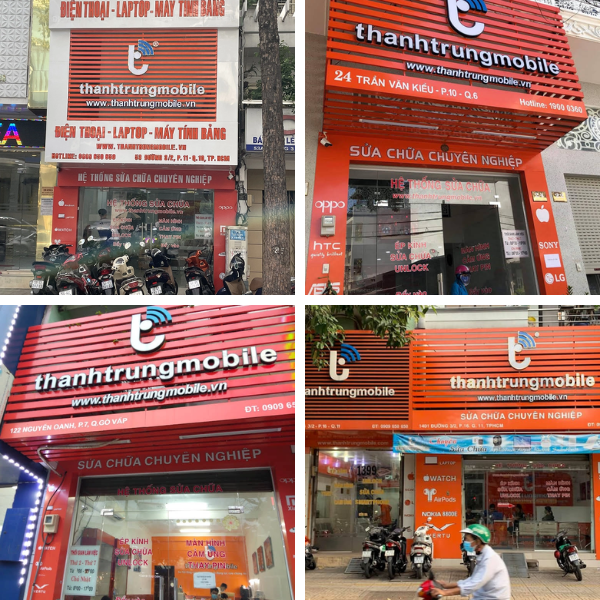

Ép kính iPhone 6 Series - Chất lượng như zin, đẹp như mới tại Thành Trung Mobile
Mặt kính của chiếc iPhone 6s, iPhone 6s Plus, iPhone 6, iPhone 6 Plus không chỉ bảo vệ màn hình mà còn góp phần quan trọng vào thẩm mỹ và trải nghiệm sử dụng của thiết bị. Tuy nhiên, sau một thời gian sử dụng, mặt kính có thể gặp phải các vấn đề như nứt, vỡ hay trầy xước, ảnh hưởng đến cảm ứng và hiển thị.
Chính vì vậy, việc ép kính cho iPhone 6 Series là một giải pháp tiết kiệm chi phí, nhanh chóng và hiệu quả. Đến với Thành Trung Mobile, bạn sẽ được trải nghiệm dịch vụ ép kính iPhone chất lượng, nhanh chóng, lấy liền trong 1-2 giờ.
Dấu hiệu cần ép lại mặt kính iPhone 6 Series
Những dấu hiệu rõ ràng nhất cho thấy mặt kính của chiếc iPhone 6 của bạn cần phải ép lại bao gồm:
- Nứt, vỡ, trầy xước, ảnh hưởng đến cảm ứng và khả năng hiển thị.
- Kính bị ám màu, ố vàng hoặc có vết bẩn không thể lau sạch.
- Thay kính kém chất lượng có thể làm mất tính thẩm mỹ và không khít với khung máy.
Để dễ dàng nhận diện tình trạng kính bị hư hỏng, bạn có thể so sánh hình ảnh trước và sau khi ép kính tại Thành Trung Mobile:

Khi nào cần ép lại mặt kính iPhone 6 Series?
Để ép kính iPhone 6 Series, điều kiện cần thiết là màn hình cảm ứng và hiển thị còn tốt. Bạn chỉ cần ép lại mặt kính khi:
- Màn hình cảm ứng vẫn hoạt động mượt mà.
- Không có sọc, điểm chết hoặc đốm mực trên màn hình.
- Vẫn lên hình và không bị ám ố hay đen màn hình.
Việc ép kính sẽ giúp bạn tiết kiệm chi phí so với việc thay cả bộ màn hình mới, đồng thời giữ lại màn hình zin của máy. Quá trình ép kính chỉ mất từ 1-2 giờ và bạn có thể lấy ngay sau khi hoàn thành.
Ép mặt kính iPhone 6 Series bao nhiêu tiền?
Bảng giá dịch vụ ép kính iPhone 6 Series tại Thành Trung Mobile được công khai và hợp lý. Mức giá cụ thể sẽ phụ thuộc vào từng dòng máy và tình trạng kính. Để biết thông tin chi tiết, bạn có thể liên hệ qua hotline hoặc đến trực tiếp cửa hàng để được tư vấn và báo giá chính xác.
Hiện tại, chúng tôi có các chương trình ưu đãi đặc biệt, giảm giá 10% khi bạn đặt lịch ép kính trước. Đặc biệt, nếu bạn sở hữu iPhone 6s, iPhone 6s Plus, iPhone 6, iPhone 6 Plus, hãy tham khảo dịch vụ ép kính iPhone 6s để biết thêm chi tiết.
Ép kính có ảnh hưởng đến màn hình không?
Với dịch vụ ép kính tại Thành Trung Mobile, bạn hoàn toàn yên tâm vì quá trình ép kính không làm ảnh hưởng đến màn hình và dữ liệu của máy. Mặt kính và màn hình là hai phần tách biệt, và khi ép kính đúng kỹ thuật, màn hình của bạn vẫn giữ nguyên chất lượng hiển thị ban đầu, không bị thay đổi màu sắc hay độ nhạy cảm ứng.
Chúng tôi cam kết ép kính bằng linh kiện chính hãng, đảm bảo sự an toàn cho chiếc iPhone của bạn. Khi lựa chọn ép kính tại một trung tâm sửa chữa uy tín như Thành Trung Mobile, bạn không cần lo lắng về chất lượng hay ảnh hưởng đến các linh kiện khác.
Ép kính có lâu không?
Quá trình ép kính tại Thành Trung Mobile chỉ mất từ 1-2 giờ, giúp bạn tiết kiệm thời gian mà vẫn đảm bảo chất lượng. Quá trình này được thực hiện bởi đội ngũ kỹ thuật viên giàu kinh nghiệm với máy ép kính hiện đại. Bạn hoàn toàn có thể theo dõi quá trình làm việc của kỹ thuật viên trực tiếp để đảm bảo sự minh bạch và chất lượng dịch vụ.
Thành Trung Mobile – Địa chỉ ép kính uy tín tại TP.HCM
Với hơn 15 năm kinh nghiệm trong lĩnh vực sửa chữa điện thoại, Thành Trung Mobile là địa chỉ tin cậy của nhiều khách hàng tại TP.HCM khi cần dịch vụ ép kính iPhone 6 Series. Các ưu điểm nổi bật khi đến với chúng tôi bao gồm:
- Sử dụng mặt kính zin, ép kính đẹp như mới, không bị ố vàng hay mất thẩm mỹ.
- Màn hình sắc nét, cảm ứng mượt mà, không bị rít tay hay trễ cảm ứng.
- Đội ngũ kỹ thuật viên giàu kinh nghiệm, thao tác chính xác và cẩn thận.
- Quy trình ép kính chuyên nghiệp, bảo hành lâu dài.
Chúng tôi có các chi nhánh tại các quận trung tâm TP.HCM, giúp khách hàng dễ dàng tiếp cận dịch vụ ép kính của chúng tôi.
Quy trình ép kính tại Thành Trung Mobile
Quy trình ép kính tại Thành Trung Mobile được thực hiện đơn giản và nhanh chóng:
- Tiếp nhận máy và kiểm tra tình trạng.
- Báo giá và thời gian hoàn thành dịch vụ.
- Ép kính và kiểm tra lại tổng thể.
- Bàn giao máy, in phiếu bảo hành, hướng dẫn bảo quản.
Hướng dẫn bảo quản màn hình sau khi ép kính
Để bảo vệ mặt kính sau khi ép, bạn nên:
- Dán kính cường lực và sử dụng ốp lưng bảo vệ.
- Tránh để máy trong môi trường nhiệt độ cao hoặc bị va đập mạnh.
- Không để gần các vật nhọn, cứng hoặc làm tì đè lên kính gây vỡ.
- Nếu để trong túi quần, hãy xoay màn hình vào trong để tránh va vào các vật cứng bên ngoài.
Liên hệ Thành Trung Mobile để ép kính iPhone 6 Series
Chúng tôi cam kết mang đến dịch vụ ép kính iPhone 6 Series chuyên nghiệp – nhanh chóng – giá rẻ – lấy liền tại TP.HCM. Hãy liên hệ ngay với chúng tôi để được tư vấn và giảm giá 10% khi đặt lịch ép kính trước. Đừng quên, Thành Trung Mobile luôn sẵn sàng hỗ trợ bạn một cách nhanh chóng và hiệu quả!
Để biết thêm thông tin về các dòng máy khác, hãy tham khảo thêm dịch vụ ép kính tại đây.